Прототипы под клиентские задачи / 2026
Дизайн, который объясняет задачу.
Прототипы и заготовки, а не финальные версии. Здесь показаны примеры типовых клиентских задач. Дизайн, структура, тексты и функции дорабатываются или заменяются под требования конкретного заказа.
О формате работ и конфиденциальности ↘01 / Веб-дизайн
ЛУЧ. Свет, который собирает пространство.
Лендинг световой мастерской: реалистичный бриф, адаптивная страница, фотографии работ и рабочая демо-форма.
Смотреть кейс ↗Открыть сам сайт ↗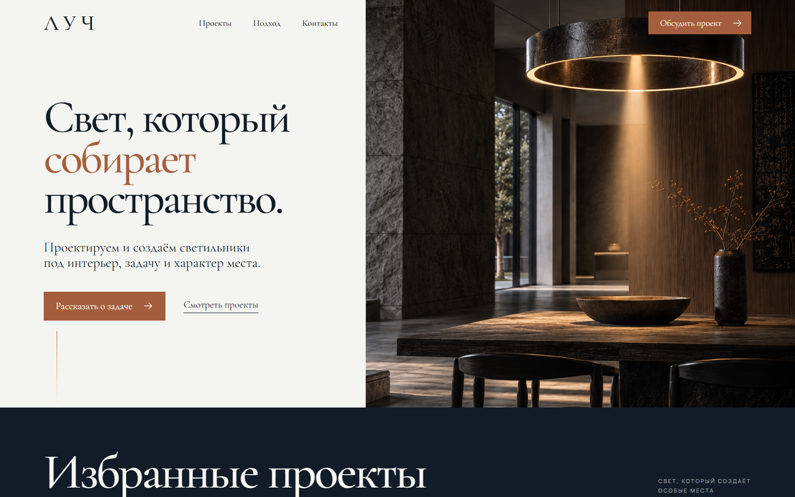
02 / Техническое SEO
СТРОПА. Не только для покупателя.
Аудит интернет-магазина и внедрение: отдельные HTML-страницы, семантическая карта, метаданные и оптимизация изображений. Проверяемое «до / после» без выдуманного роста трафика.
Смотреть SEO-кейс ↗Открыть статическую витрину ↗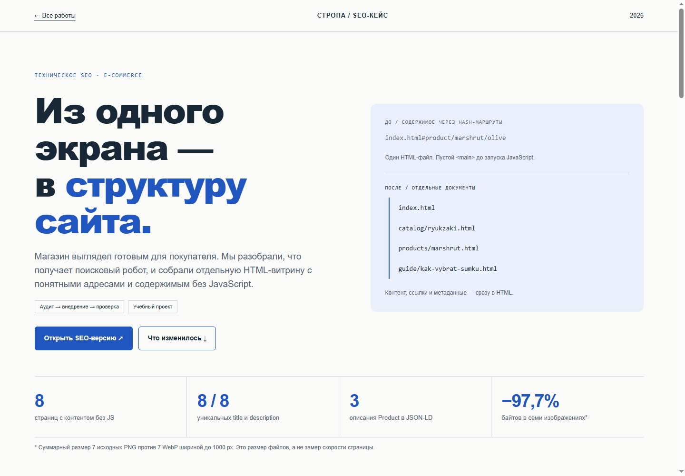
03 / Веб-приложение
ШПОН. Каждому заказу — своё место.
Кабинет мебельной мастерской: доска заказов, карточка изделия, поиск, фильтры и калькулятор стоимости с сохранением сметы в заказ.
Смотреть кейс ↗Попробовать приложение ↗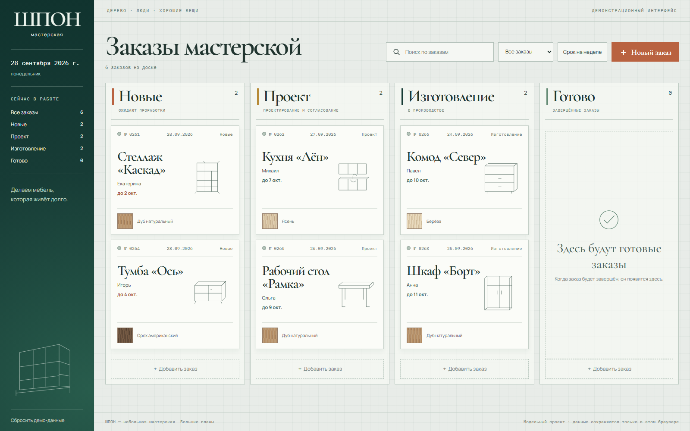
03 / Веб-приложение · Аналитический дашборд
СРЕЗ. Продажи без лишнего шума.
Показатели, динамика, каналы и заказы из одного набора данных. Фильтры, сравнение периодов, поиск в таблице и CSV с предпросмотром. Расчёты работают, данные — модельные.
Смотреть кейс ↗Попробовать дашборд ↗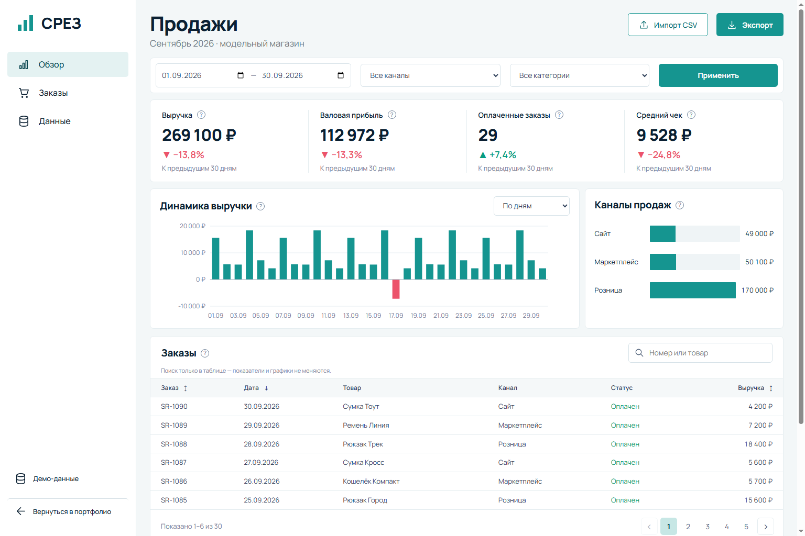
04 / Прототип ИИ-агента
Global. Сначала контекст. Затем — ответ.
Поддержка онлайн-школы: шесть обращений, проверка ученика и курса, источники, черновик и подтверждение действий. Сейчас — локальные сценарии; модель и API заказчика подключаются отдельным этапом.
Смотреть кейс ↗Попробовать прототип ↗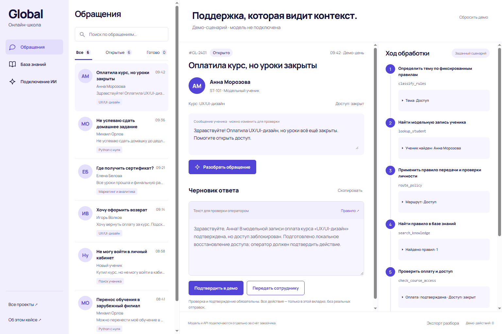
05 / Автоматизация
ШПОН. Разговор становится заявкой.
Прототип бота собирает мебельный бриф, проверяет ответы и готовит заявку. Публичный демо-чат работает в браузере; реальные отправки в Telegram и связь с кабинетом подключаются отдельно.
Смотреть кейс бота ↗Попробовать локальное демо ↗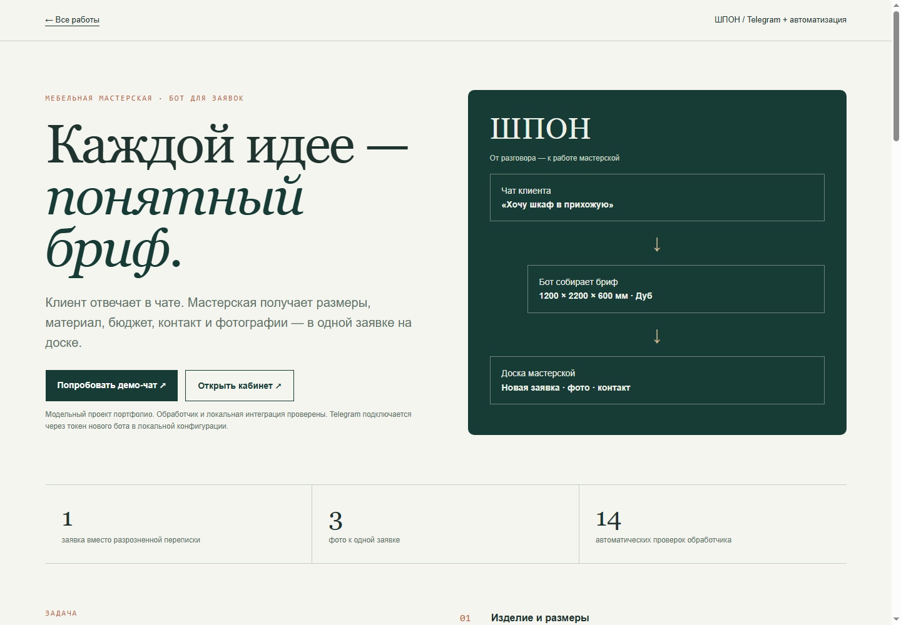
06 / Мобильное приложение
БЛЮДО. Обед по твоим правилам.
Приложение доставки: каталог, состав блюд, корзина, оформление и четыре этапа демо-заказа. Мобильный интерфейс с сохранением и офлайн-сценарием.
Смотреть кейс ↗Попробовать приложение ↗


07 / Помощник по документам
ИСТОК. Документы вместо догадок.
Прототип помощника с рабочим поиском по TXT и Markdown прямо в браузере и точными источниками. DOCX — в локальной серверной версии. ИИ пока не подключён; модель и расходы на API — отдельный этап за счёт заказчика.
Смотреть кейс ↗Попробовать локальный поиск ↗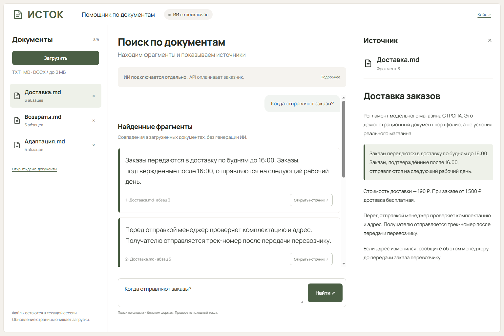
08 / Интернет-магазин
СТРОПА. От выбора до корзины.
Магазин городских сумок: каталог, фильтры, варианты цветов, корзина с сохранением и демонстрационное оформление заказа.
Смотреть кейс ↗Попробовать магазин ↗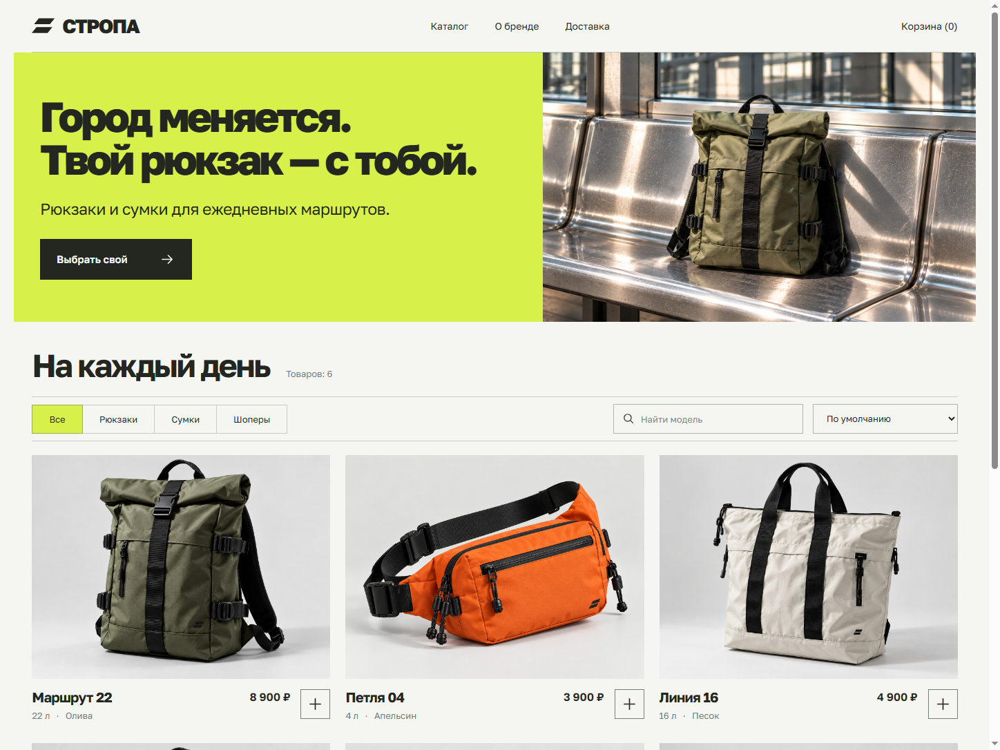
09 / Карточки товара
ПОЛЕ. Лето в каждой чашке.
Товарная серия для бренда травяного чая: обложка, состав и приготовление. Единая упаковка, предметные изображения и яркая инфографика.
Смотреть кейс ↗Скачать карточки PNG ↓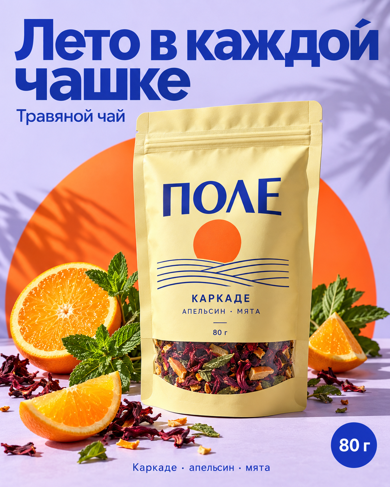
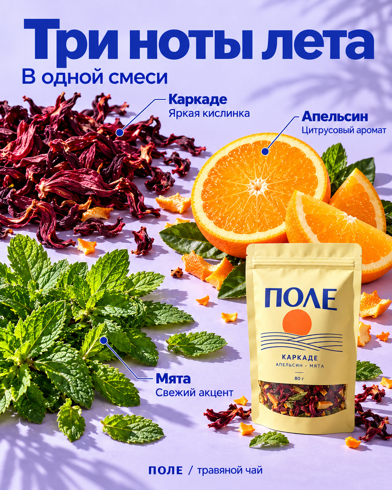
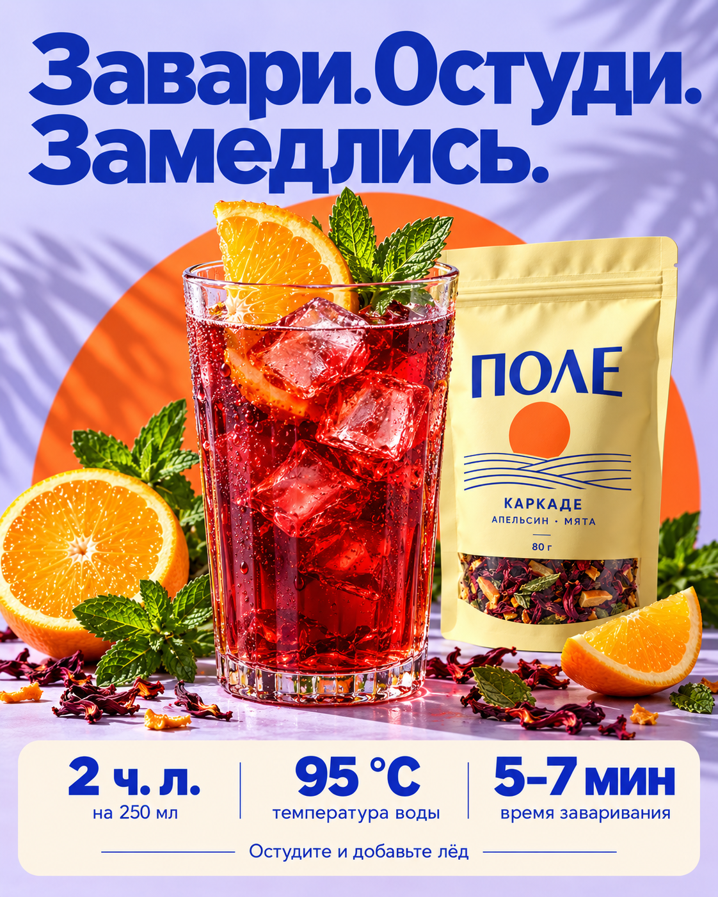
10 / Дизайн презентаций
Одна тема. Три визуальных голоса.
Вебинар, редакционная стратегия и технологичный keynote: 27 слайдов, три разных задачи и редактируемые PPTX.
Смотреть презентации ↗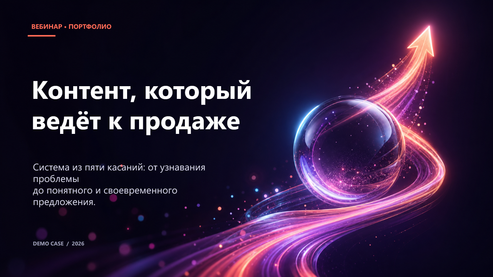
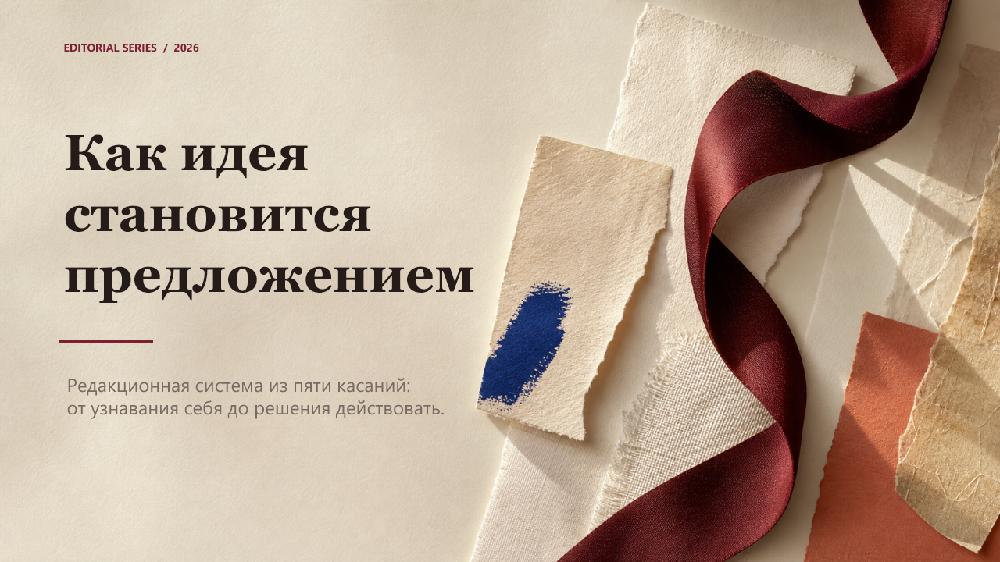
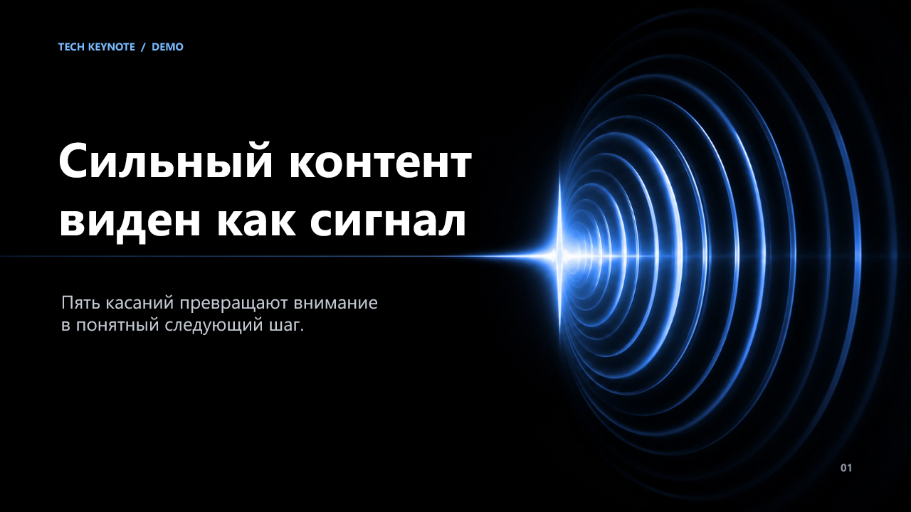
11 / Фирменный стиль
СМЕНА. Кофе с собой, характер — с первого взгляда.
Айдентика городской кофейни: векторный логотип, знак, палитра и паттерн. Применение на стаканах, пакете и вывеске, плюс короткий бренд-гайд.
Смотреть кейс ↗Скачать комплект айдентики ↓
Прототип — начало.
Не финальный результат.
В портфолио собраны демонстрационные прототипы и заготовки под типовые клиентские задачи. Они показывают подход, дизайн и возможные сценарии, а не окончательный объём или готовность решения к запуску. Любая часть — от визуального стиля до функций и интеграций — может дорабатываться, заменяться или создаваться заново под конкретный заказ.
Конфиденциальность клиентов
Наша политика — не публиковать имена и данные клиентов, закрытые материалы и финальные версии их проектов без согласования. Представленные демонстрации самостоятельны: они не раскрывают клиентские проекты. Обсудить похожую задачу и показать доступные функции можно на этих прототипах.